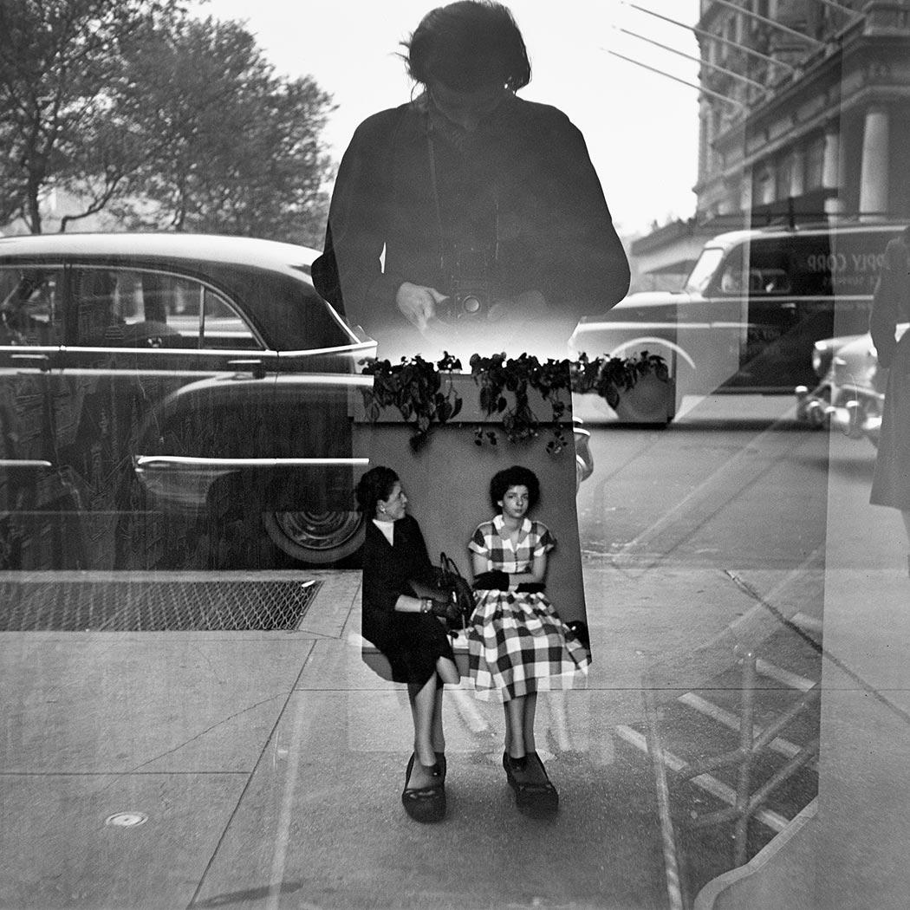
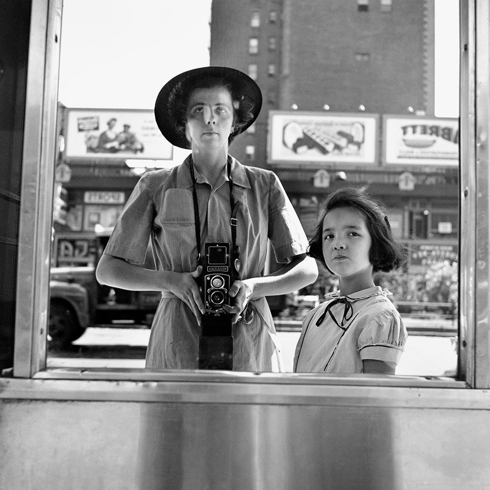
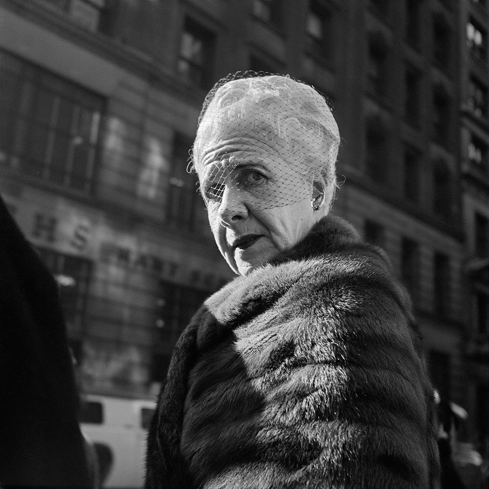
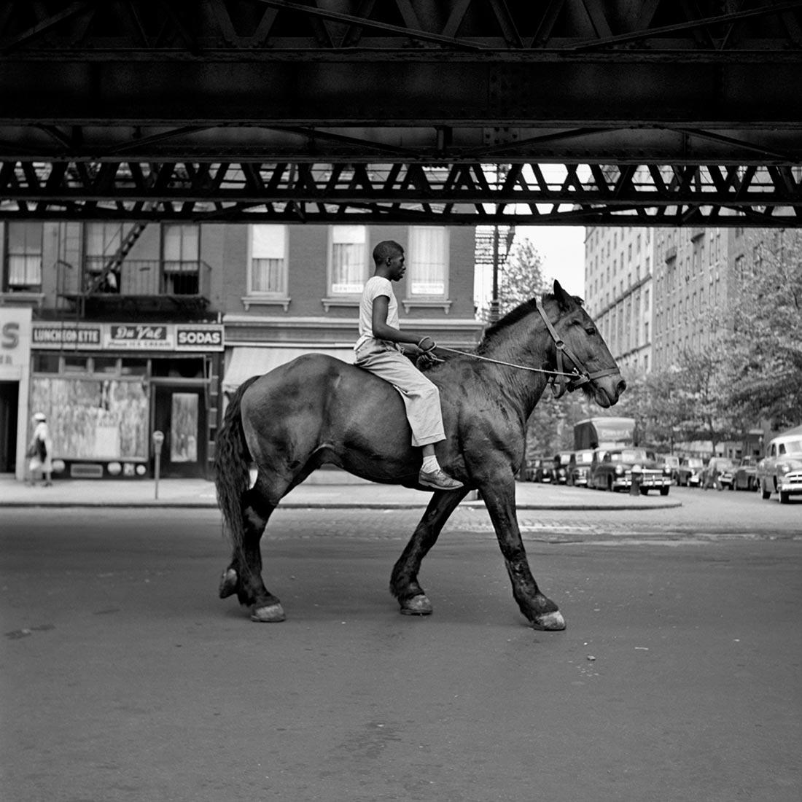
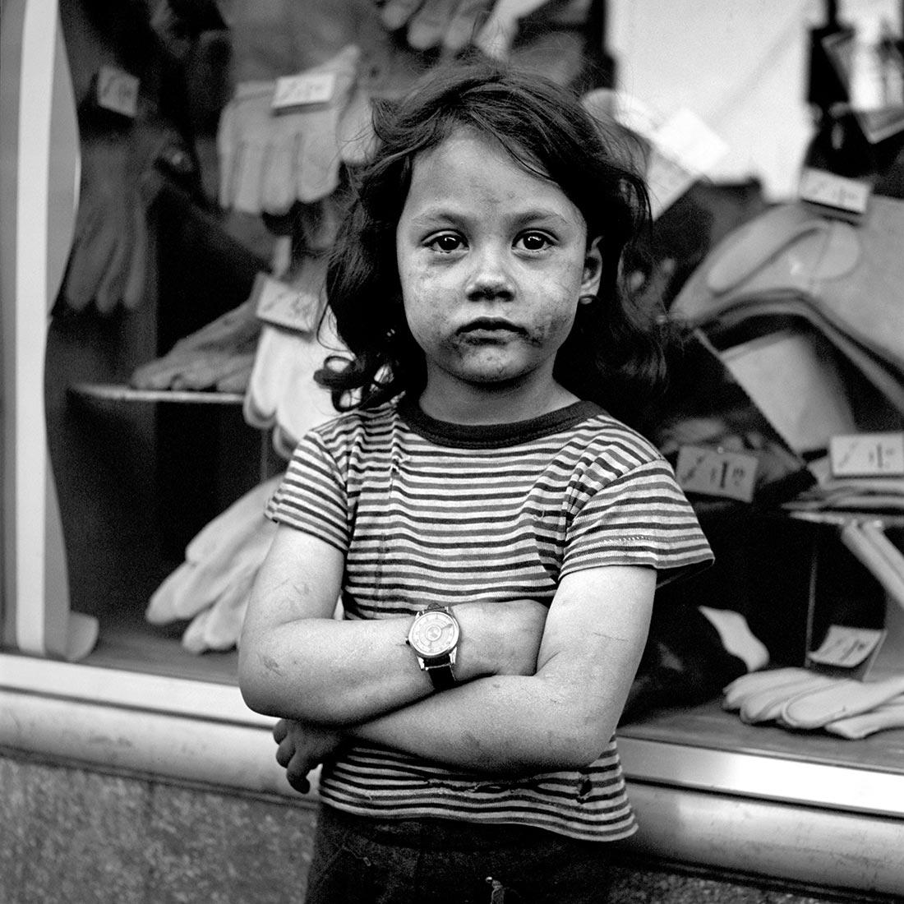
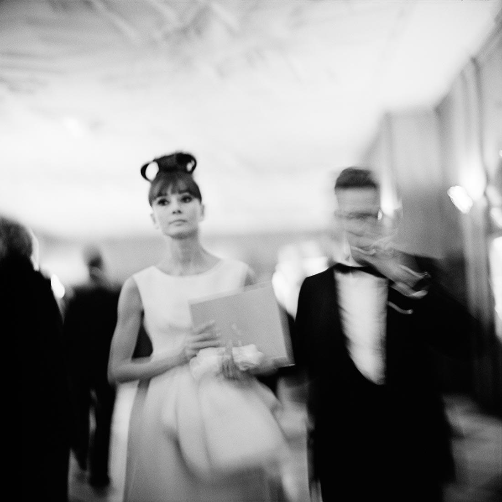
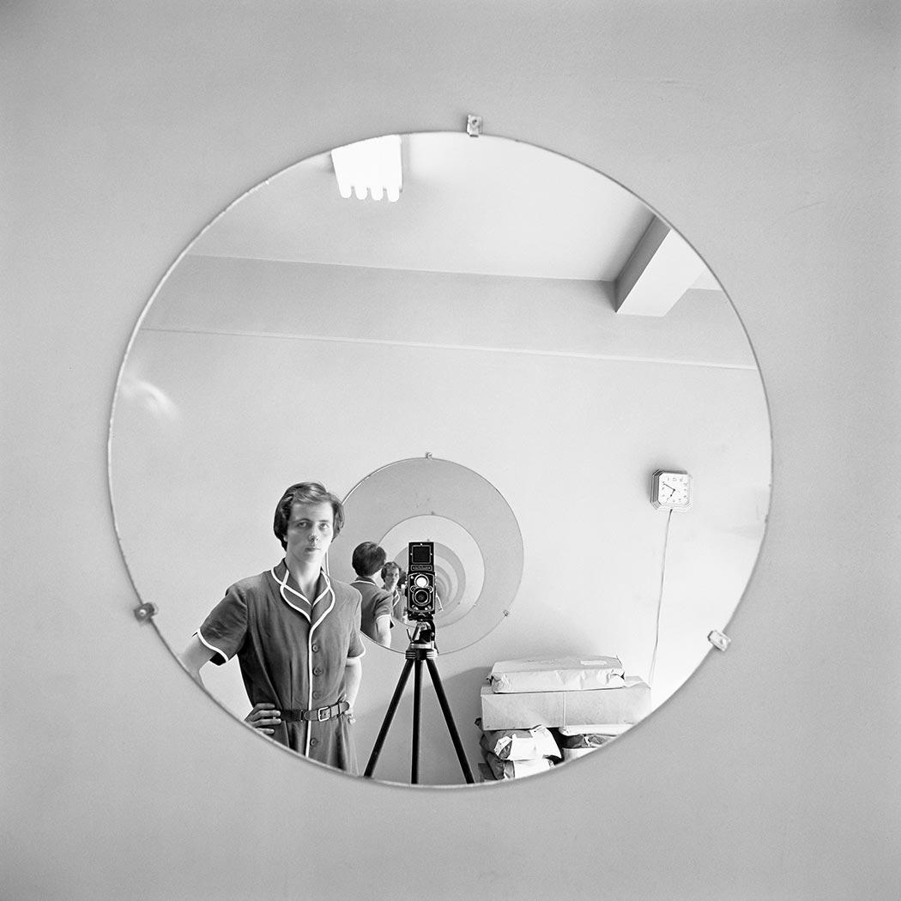

사진을 좀 찍다 보면 한 번쯤 이상한 상상을 한다. 내가 찍은 필름을 아무에게도 안 보여주고, 현상조차 안 한 채로 평생 상자에 쌓아두면 어떻게 될까. 비비안 마이어는 그 상상을 실제로 살았다.
2007년 시카고의 한 창고 경매. 밀린 보관료 때문에 압류된 짐들이 헐값에 넘어가던 자리에서, 존 말루프라는 청년이 네거티브가 잔뜩 든 상자 하나를 380달러쯤에 샀다. 동네 역사 책에 쓸 옛날 사진이나 찾을 생각이었다. 상자 안에 든 게 20세기 거리 사진의 한 챕터일 줄은, 산 사람도 찍은 사람도 몰랐다.
본업은 유모였다
비비안 마이어(1926~2009)는 사진가가 아니었다. 정확히 말하면, 살아 있는 동안 누구도 그를 사진가라 부르지 않았다. 그는 유모로 일했다. 뉴욕에서 태어나 한동안 프랑스에서 자랐고, 다시 미국으로 건너와 시카고 북부의 여러 가정에서 40년 가까이 아이들을 돌봤다. 쉬는 날이면 카메라를 메고 거리로 나갔다. 그게 전부였다. 전시도, 인화도, 누구에게 보여주는 일도 없었다.
허리춤의 카메라
그가 주로 쓴 건 롤라이플렉스다. 눈높이로 들어 올려 겨누는 카메라가 아니라, 허리께에 들고 위에서 내려다보며 초점을 맞추는 카메라다. 이 자세 덕에 묘한 일이 일어난다. 찍히는 사람이 자기가 찍히는 줄 모른다. 렌즈가 얼굴을 정면으로 겨누지 않으니까. 마이어가 거리의 표정을 그렇게 가까이, 그렇게 무방비한 모습으로 담을 수 있었던 데에는 이 6x6 정사각형 카메라의 생김새가 한몫했다.
자화상도 많이 남겼는데, 거울이나 쇼윈도에 비친 자기 모습을 슬쩍 끼워 넣는 방식이었다. 정면으로 "나를 보라" 하는 자화상이 아니라, 거리 풍경 한구석에 자기를 숨겨두는 자화상. 평생 자기를 드러내지 않은 사람다운 방식이다.


그가 본 거리
마이어의 거리에는 위계가 없다. 모피를 두른 노부인도, 고가철로 밑에서 말을 끌고 가는 소년도, 장갑 가게 앞에서 팔짱을 낀 꼬마도 같은 눈높이로 담긴다. 유모로 살아서였을까, 특히 아이들 앞에서 셔터가 오래 머문다. 얼굴에 뭘 묻힌 채 어른처럼 팔짱을 낀 아이의 표정 같은 건, 아이를 오래 들여다본 사람만 잡을 수 있는 장면이다.



완벽하게만 찍은 것도 아니다. 흔들리고 번진 프레임도 그대로 남겼다. 군중 사이를 스쳐 가는 오드리 헵번을 잡은 한 장은 초점도 안 맞고 흔들렸지만, 오히려 그 순간의 우연함이 더 생생하다.

현상하지 않은 필름
여기서부터가 필름 쓰는 사람에게 가장 오래 남는 대목이다. 마이어가 남긴 필름 가운데 상당수는 그가 살아 있는 동안 현상조차 되지 않았다. 찍고, 되감고, 상자에 넣고, 그게 끝이었다. 필름은 셔터를 누른 순간 이미 빛을 받아 둔다. 다만 현상 약품을 거치기 전까지는 그 상이 눈에 보이지 않을 뿐이다. 마이어의 필름은 수십 년을 그 보이지 않는 상태로 상자 속에 잠들어 있었던 셈이다.
왜 현상을 안 했을까. 돈이 없어서, 시간이 없어서, 어쩌면 찍는 행위 자체로 이미 충분해서. 정확한 이유는 아무도 모른다. 분명한 건, 그에게 사진은 남에게 보여주기 위한 결과물이 아니라 보는 일 그 자체였다는 점이다.

세상이 알아봤을 때, 그는 없었다
말루프가 네거티브를 스캔해 블로그에 올리자 반응이 터졌다. 전시가 열리고, 사진집이 나오고, 2013년에는 다큐멘터리 '비비안 마이어를 찾아서'가 만들어져 아카데미상 후보에까지 올랐다. 그가 찍은 사진이 처음으로 벽에 걸리고, 사람들이 그 앞에 멈춰 섰다.
다만 마이어 본인은 그걸 하나도 보지 못했다. 그는 2009년, 자기 필름이 막 세상에 알려지기 시작하던 무렵 가난 속에서 조용히 세상을 떠났다. 사후에는 저작권을 둘러싼 다툼이 길게 이어졌다. 평생 단 한 장도 팔지 않은 사람의 작업을 누가 어떻게 다룰 것인가를 두고, 정작 본인만 빠진 채로.
좋은 사진은 언젠가 알아봐 준다는 말을, 마이어 앞에서는 한 번쯤 믿어보고 싶어진다. 다만 그 '언젠가'는 본인이 떠난 뒤에야 왔고, 그를 세상에 꺼내 준 건 평론가가 아니라 창고 경매와 스캐너였다. 그리고 그 모든 게 가능했던 건, 수십 년이 지나도 그날의 빛을 고스란히 품고 있어 준 필름 덕이다. 찍어두기만 해도 언젠가 다시 꺼내 볼 수 있다는 것. 필름을 쓰는 우리가 은근히 기대는 그 약속을, 비비안 마이어는 15만 장으로 증명하고 갔다.